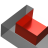
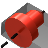
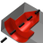
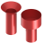
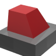
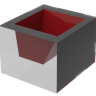
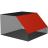

15.2. Features
Commands to create features in the Features menu:
Create a protrusion via the linear sweep of a contour from curves and boundaries on a face within a solid. Features → Linear protrusion | |
 | Create a slot via the linear sweep of a contour from curves and boundaries, based on a face within a solid. Features → Linear slot |
 | Add a protrusion to a face of an existing solid by rotating a rotation curve around a rotation axis. Features → Rotational protrusion |
 | Remove a round slot that has been created by rotating a contour from a solid. Features → Rotational slot |
 | Create a hole optionally with further machining (thread, fit, slot, countersink). Features → Holes |
Multiply existing CAD features or solids to form a determining pattern and modify the pattern. Features → Pattern | |
 | Create a protrusion between two contours that define the shape of the protrusion. Features → Protrusion (two contours) |
 | Create a slot between two contours that define the shape of the slot. Features → Slot (two contours) |
Generate or modify a fillet in a solid. Features → Fillet | |
 | Create or modify a chamfer as a CAD feature along a continuous edge in a solid. Features → Chamfer |
Create a CAD feature from faces within a solid. Features → Zone |